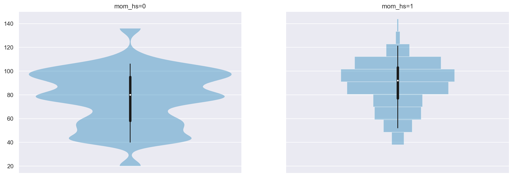

Confronto tra le medie di due gruppi#
Nel capitolo Confronto tra due gruppi, abbiamo esaminato come effettuare l’inferenza sulla differenza tra le medie di due campioni indipendenti usando un modello bayesiano. In questo approccio, trattiamo i due gruppi come entità separate e calcoliamo direttamente la differenza tra le loro medie. Per fare ciò, utilizziamo distribuzioni a priori per i parametri del modello, come le deviazioni standard e le medie, e poi aggiorniamo queste distribuzioni a posteriori utilizzando i dati osservati.
Tuttavia, possiamo ottenere lo stesso risultato utilizzando un modello di regressione. Invece di calcolare direttamente la differenza tra le medie dei due gruppi, includiamo una variabile “dummy” nel modello di regressione. Questa variabile “dummy” ci permette di rappresentare in modo binario l’appartenenza dei dati ai gruppi: assegniamo il valore 0 a un gruppo di riferimento e il valore 1 al gruppo di confronto. Successivamente, il modello di regressione stima un parametro di regressione associato alla variabile “dummy”, che rappresenta proprio la differenza tra le medie dei due gruppi. Quindi, la variabile “dummy” funge da indicatore per il gruppo e ci consente di ottenere la stima della differenza tra le medie dei due gruppi in modo efficiente.
Entrambi gli approcci sono validi per l’inferenza sulla differenza tra le medie dei due gruppi indipendenti, ma il modello di regressione offre una maggiore flessibilità e possibilità di espansione. Infatti, possiamo includere ulteriori variabili esplicative nel modello di regressione per comprendere meglio i fattori che influenzano il risultato di interesse. Questa flessibilità è particolarmente utile quando vogliamo esplorare come altre variabili possano contribuire alla differenza tra le medie dei gruppi o quando desideriamo considerare più fattori simultaneamente.
Preparazione del Notebook#
import numpy as np
import pandas as pd
import matplotlib.pyplot as plt
import seaborn as sns
import scipy as sc
import statistics as st
import arviz as az
import bambi as bmb
import pymc as pm
import pymc.sampling_jax
from pymc import HalfNormal, Model, Normal, sample
import warnings
warnings.filterwarnings("ignore", category=UserWarning)
warnings.filterwarnings("ignore", category=FutureWarning)
warnings.filterwarnings("ignore", category=Warning)
/var/folders/cl/wwjrsxdd5tz7y9jr82nd5hrw0000gn/T/ipykernel_21618/3490261709.py:2: DeprecationWarning:
Pyarrow will become a required dependency of pandas in the next major release of pandas (pandas 3.0),
(to allow more performant data types, such as the Arrow string type, and better interoperability with other libraries)
but was not found to be installed on your system.
If this would cause problems for you,
please provide us feedback at https://github.com/pandas-dev/pandas/issues/54466
import pandas as pd
/Users/corrado/opt/anaconda3/envs/pymc_env/lib/python3.11/site-packages/tqdm/auto.py:21: TqdmWarning: IProgress not found. Please update jupyter and ipywidgets. See https://ipywidgets.readthedocs.io/en/stable/user_install.html
from .autonotebook import tqdm as notebook_tqdm
%config InlineBackend.figure_format = 'retina'
# Initialize random number generator
RANDOM_SEED = 8927
rng = np.random.default_rng(RANDOM_SEED)
az.style.use("arviz-darkgrid")
sns.set_theme(palette="colorblind")
Regressione bayesiana per due gruppi indipendenti#
Nel contesto bayesiano, il modello di regressione può essere formulato nel modo seguente:
In questa rappresentazione:
\( \alpha \) agisce come intercetta,
\( \beta \) è il coefficiente angolare o la pendenza,
\( \sigma \) è l’errore standard associato alle osservazioni.
Nel caso specifico, la variabile \( x \) è una variabile indicatrice che assume i valori 0 o 1. Per il gruppo identificato da \( x = 0 \), il modello si riduce a:
Questo implica che \( \alpha \) rappresenta la media del gruppo codificato come \( x = 0 \).
Per il gruppo contrassegnato da \( x = 1 \), il modello diventa:
In termini dei parametri del modello, la media per il gruppo codificato con \( x = 1 \) è rappresentata da \( \alpha + \beta \). In questa configurazione, \( \beta \) indica la differenza tra la media del gruppo con \( x = 1 \) e quella del gruppo con \( x = 0 \). Di conseguenza, l’analisi della differenza tra le medie dei due gruppi può essere effettuata attraverso l’inferenza sul parametro \( \beta \). In sintesi, per confrontare le medie dei due gruppi indipendenti, si può esaminare la distribuzione a posteriori di \( \beta \).
Un esempio illustrativo#
Esaminiamo nuovamente i dati relativi al quoziente di intelligenza dei bambini le cui madri hanno completato oppure no la scuola superiore. Ci poniamo il problema di replicare i risultati ottenuti in precedenza usando l’analisi di regressione.
Leggiamo i dati:
kidiq = pd.read_stata("../data/kidiq.dta")
kidiq.head()
| kid_score | mom_hs | mom_iq | mom_work | mom_age | |
|---|---|---|---|---|---|
| 0 | 65 | 1.0 | 121.117529 | 4 | 27 |
| 1 | 98 | 1.0 | 89.361882 | 4 | 25 |
| 2 | 85 | 1.0 | 115.443165 | 4 | 27 |
| 3 | 83 | 1.0 | 99.449639 | 3 | 25 |
| 4 | 115 | 1.0 | 92.745710 | 4 | 27 |
kidiq.groupby(["mom_hs"]).size()
mom_hs
0.0 93
1.0 341
dtype: int64
Ci sono 93 bambini la cui madre non ha completato le superiori e 341 bambini la cui madre ha ottenuto il diploma di scuola superiore.
summary_stats = [st.mean, st.stdev]
kidiq.groupby(["mom_hs"]).aggregate(summary_stats)
| kid_score | mom_iq | mom_work | mom_age | |||||
|---|---|---|---|---|---|---|---|---|
| mean | stdev | mean | stdev | mean | stdev | mean | stdev | |
| mom_hs | ||||||||
| 0.0 | 77.548387 | 22.573800 | 91.889152 | 12.630498 | 2.322581 | 1.226175 | 21.677419 | 2.727323 |
| 1.0 | 89.319648 | 19.049483 | 102.212049 | 14.848414 | 3.052786 | 1.120727 | 23.087977 | 2.617453 |
az.plot_violin(
{
"mom_hs=0": kidiq.loc[kidiq.mom_hs == 0, "kid_score"],
"mom_hs=1": kidiq.loc[kidiq.mom_hs == 1, "kid_score"],
}
);

Iniziamo l’inferenza statistica sulla differenza tra le medie dei due gruppi utilizzando bambi. Questo pacchetto offre una sintassi semplice per formulare il modello bayesiano di interesse. Un altro vantaggio è che bambi selezionerà automaticamente le distribuzioni a priori appropriate per i parametri del modello, rendendo il processo più intuitivo.
Il modello di regressione sopra descritto si scrive nel modo seguente.
mod = bmb.Model("kid_score ~ mom_hs", kidiq)
Effettuiamo il campionamento.
results = mod.fit(method="nuts_numpyro", idata_kwargs={"log_likelihood": True})
Show code cell output
Compiling...
Compilation time = 0:00:03.152294
Sampling...
0%| | 0/2000 [00:00<?, ?it/s]
Compiling.. : 0%| | 0/2000 [00:00<?, ?it/s]
0%| | 0/2000 [00:00<?, ?it/s]
Compiling.. : 0%| | 0/2000 [00:00<?, ?it/s]
0%| | 0/2000 [00:00<?, ?it/s]
Compiling.. : 0%| | 0/2000 [00:00<?, ?it/s]
0%| | 0/2000 [00:00<?, ?it/s]
Compiling.. : 0%| | 0/2000 [00:00<?, ?it/s]
Running chain 3: 0%| | 0/2000 [00:02<?, ?it/s]
Running chain 2: 0%| | 0/2000 [00:02<?, ?it/s]
Running chain 1: 0%| | 0/2000 [00:02<?, ?it/s]
Running chain 0: 0%| | 0/2000 [00:02<?, ?it/s]
Running chain 0: 100%|█████████████████████████████████████████████████████| 2000/2000 [00:02<00:00, 836.79it/s]
Running chain 1: 100%|█████████████████████████████████████████████████████| 2000/2000 [00:02<00:00, 837.41it/s]
Running chain 2: 100%|█████████████████████████████████████████████████████| 2000/2000 [00:02<00:00, 838.07it/s]
Running chain 3: 100%|█████████████████████████████████████████████████████| 2000/2000 [00:02<00:00, 838.60it/s]
Sampling time = 0:00:02.807562
Transforming variables...
Transformation time = 0:00:00.107738
Computing Log Likelihood...
Log Likelihood time = 0:00:00.207331
Possiamo ispezionare le proprietà del modello nel modo seguente.
mod
Formula: kid_score ~ mom_hs
Family: gaussian
Link: mu = identity
Observations: 434
Priors:
target = mu
Common-level effects
Intercept ~ Normal(mu: 86.7972, sigma: 110.1032)
mom_hs ~ Normal(mu: 0.0, sigma: 124.2132)
Auxiliary parameters
sigma ~ HalfStudentT(nu: 4.0, sigma: 20.3872)
------
* To see a plot of the priors call the .plot_priors() method.
* To see a summary or plot of the posterior pass the object returned by .fit() to az.summary() or az.plot_trace()
Le distribuzioni a priori utilizzate di default dal modello possono essere visualizzate nel modo seguente.
mod.plot_priors();
Sampling: [Intercept, kid_score_sigma, mom_hs]

Per ispezionare il nostro posteriore e il processo di campionamento possiamo utilizzare az.plot_trace(). L’opzione kind='rank_vlines' ci fornisce una variante del grafico di rango che utilizza linee e punti e ci aiuta a ispezionare la stazionarietà delle catene. Poiché non c’è un modello chiaro o deviazioni serie dalle linee orizzontali, possiamo concludere che le catene sono stazionarie.
az.plot_trace(results, kind="rank_vlines")
plt.tight_layout()

az.summary(results, round_to=2)
| mean | sd | hdi_3% | hdi_97% | mcse_mean | mcse_sd | ess_bulk | ess_tail | r_hat | |
|---|---|---|---|---|---|---|---|---|---|
| Intercept | 77.58 | 2.02 | 74.02 | 81.48 | 0.03 | 0.02 | 3784.79 | 2985.89 | 1.0 |
| mom_hs | 11.76 | 2.27 | 7.21 | 15.73 | 0.04 | 0.03 | 3952.49 | 2785.42 | 1.0 |
| kid_score_sigma | 19.89 | 0.68 | 18.60 | 21.19 | 0.01 | 0.01 | 3745.34 | 2882.60 | 1.0 |
Il parametro “Intercept” rappresenta la stima a posteriori del punteggio del QI per il gruppo codificato con “mom_hs” uguale a 0. La media a posteriori di questo gruppo è di 77.6, che è praticamente identica al valore campionario corrispondente.
Il parametro “mom_hs” corrisponde alla stima a posteriori della differenza nei punteggi del QI tra il gruppo codificato con “mom_hs” uguale a 1 e il gruppo codificato con “mom_hs” uguale a 0. Anche in questo caso, la differenza a posteriori di 11.8 tra le medie dei due gruppi è molto simile alla differenza campionaria tra le medie dei due gruppi. La parte importante della tabella riguarda l’intervallo di credibilità al 94%, che è [7.5, 16.2], e che non include lo 0. Ciò significa che, con un livello di certezza soggettiva del 94%, possiamo essere sicuri che il QI dei bambini le cui madri hanno il diploma superiore sarà maggiore (in media) di almeno 7.5 punti, e tale differenza può arrivare fino a 16.2 punti, rispetto al QI dei bambini le cui madri non hanno completato la scuola superiore.
Se confrontiamo questi risultati con quelli ottenuti nel capitolo Confronto tra due gruppi, notiamo che sono quasi identici. Le piccole differenze che si osservano possono essere attribuite sia all’approssimazione numerica sia al fatto che nel modello precedente abbiamo consentito deviazioni standard diverse per i due gruppi, mentre nel caso attuale abbiamo assumo la stessa variabilità per entrambi i gruppi.
Il test bayesiano di ipotesi può essere svolto, per esempio, calcolando la probabilità che \(\beta_{mean\_diff} > 0\). Questa probabilità è 1, per cui concludiamo che la media del gruppo codificato con “mom_hs = 1” è maggiore della media del gruppo codificato con “mom_hs = 0”.
az.plot_posterior(results, var_names="mom_hs", ref_val=0, figsize=(6, 3));

Un valore numerico si ottiene nel modo seguente.
results.posterior
<xarray.Dataset>
Dimensions: (chain: 4, draw: 1000)
Coordinates:
* chain (chain) int64 0 1 2 3
* draw (draw) int64 0 1 2 3 4 5 6 ... 993 994 995 996 997 998 999
Data variables:
Intercept (chain, draw) float64 74.11 79.64 74.06 ... 80.92 79.51
mom_hs (chain, draw) float64 16.59 9.2 16.41 ... 9.27 9.725 9.958
kid_score_sigma (chain, draw) float64 19.04 22.03 18.96 ... 19.34 19.41
Attributes:
created_at: 2024-02-17T20:20:30.136209
arviz_version: 0.17.0
modeling_interface: bambi
modeling_interface_version: 0.13.0# Probabiliy that posterior is > 0
(results.posterior["mom_hs"] > 0).mean().item()
1.0
Parametrizzazione alternativa#
Consideriamo adesso il caso in cui, per distinguere i gruppi, anziché una variabile dicotomica, con valori 0 e 1, usiamo una variabile qualitativa con i nomi dei due gruppi. Introduciamo questa nuova variabile nel data frame.
# Add a new column 'hs' with the categories based on 'mom_hs'
kidiq["hs"] = kidiq["mom_hs"].map({0: "not_completed", 1: "completed"})
kidiq.tail()
| kid_score | mom_hs | mom_iq | mom_work | mom_age | hs | |
|---|---|---|---|---|---|---|
| 429 | 94 | 0.0 | 84.877412 | 4 | 21 | not_completed |
| 430 | 76 | 1.0 | 92.990392 | 4 | 23 | completed |
| 431 | 50 | 0.0 | 94.859708 | 2 | 24 | not_completed |
| 432 | 88 | 1.0 | 96.856624 | 2 | 21 | completed |
| 433 | 70 | 1.0 | 91.253336 | 2 | 25 | completed |
Adattiamo il modello ai dati, usando questa nuova variabile e forziamo a zero l’intercetta che Bambi aggiunge di default al modello.
mod_2 = bmb.Model("kid_score ~ 0 + hs", kidiq)
results_2 = mod_2.fit(method="nuts_numpyro", idata_kwargs={"log_likelihood": True})
Show code cell output
Compiling...
Compilation time = 0:00:01.332834
Sampling...
0%| | 0/2000 [00:00<?, ?it/s]
Compiling.. : 0%| | 0/2000 [00:00<?, ?it/s]
0%| | 0/2000 [00:00<?, ?it/s]
Compiling.. : 0%| | 0/2000 [00:00<?, ?it/s]
0%| | 0/2000 [00:00<?, ?it/s]
Compiling.. : 0%| | 0/2000 [00:00<?, ?it/s]
0%| | 0/2000 [00:00<?, ?it/s]
Compiling.. : 0%| | 0/2000 [00:00<?, ?it/s]
Running chain 1: 0%| | 0/2000 [00:01<?, ?it/s]
Running chain 0: 0%| | 0/2000 [00:01<?, ?it/s]
Running chain 2: 0%| | 0/2000 [00:01<?, ?it/s]
Running chain 3: 0%| | 0/2000 [00:01<?, ?it/s]
Running chain 0: 100%|█████████████████████████████████████████████████████| 2000/2000 [00:02<00:00, 982.19it/s]
Running chain 1: 100%|█████████████████████████████████████████████████████| 2000/2000 [00:02<00:00, 982.68it/s]
Running chain 2: 100%|█████████████████████████████████████████████████████| 2000/2000 [00:02<00:00, 983.52it/s]
Running chain 3: 100%|█████████████████████████████████████████████████████| 2000/2000 [00:02<00:00, 984.24it/s]
Sampling time = 0:00:02.180846
Transforming variables...
Transformation time = 0:00:00.093670
Computing Log Likelihood...
Log Likelihood time = 0:00:00.153285
Ispezionare il modello e le distribuzioni a priori.
mod_2
Formula: kid_score ~ 0 + hs
Family: gaussian
Link: mu = identity
Observations: 434
Priors:
target = mu
Common-level effects
hs ~ Normal(mu: [0. 0.], sigma: [124.2132 124.2132])
Auxiliary parameters
sigma ~ HalfStudentT(nu: 4.0, sigma: 20.3872)
------
* To see a plot of the priors call the .plot_priors() method.
* To see a summary or plot of the posterior pass the object returned by .fit() to az.summary() or az.plot_trace()
mod_2.plot_priors();
Sampling: [hs, kid_score_sigma]

Esaminiamo le distribuzioni a posteriori dei parametri del modello.
az.plot_trace(results_2, kind="rank_vlines");

az.summary(results_2)
| mean | sd | hdi_3% | hdi_97% | mcse_mean | mcse_sd | ess_bulk | ess_tail | r_hat | |
|---|---|---|---|---|---|---|---|---|---|
| hs[completed] | 89.322 | 1.089 | 87.275 | 91.302 | 0.017 | 0.012 | 4041.0 | 3016.0 | 1.0 |
| hs[not_completed] | 77.482 | 2.060 | 73.442 | 81.147 | 0.034 | 0.024 | 3583.0 | 2728.0 | 1.0 |
| kid_score_sigma | 19.895 | 0.687 | 18.657 | 21.195 | 0.011 | 0.008 | 3913.0 | 3240.0 | 1.0 |
In questo caso, notiamo che abbiamo ottenuto le distribuzioni a posteriori per i parametri hs[completed] e hs[not_completed] che corrispondono alle medie dei due gruppi. Tali distribuzioni a posteriori illustrano direttamente l’incertezza sulla media dei due gruppi, alla luce della variabilità campionaria e delle nostre credenze a priori.
Possiamo svolgere il test bayesiano di ipotesi sulla differenza tra le due medie a posteriori nel modo seguente.
post_group = results_2.posterior["hs"]
diff = post_group.sel(hs_dim="completed") - post_group.sel(hs_dim="not_completed")
az.plot_posterior(diff, ref_val=0, figsize=(6, 3));

# Probabiliy that posterior is > 0
(post_group > 0).mean().item()
1.0
I risultati sono ovviamente identici a quelli trovati in precedenza.
Analisi con PyMC#
Per completezza, ripetiamo l’analsi specificando il modello bayesiano con PyMC.
μ_m = kidiq.kid_score.mean()
μ_s = kidiq.kid_score.std() * 3
with Model() as model:
# Priors
alpha = Normal("alpha", mu=μ_m, sigma=μ_s)
beta = Normal("beta", mu=0, sigma=10)
sigma = pm.HalfNormal("sigma", sigma=30)
# Expected value of outcome
mu = alpha + beta * kidiq["mom_hs"]
# Likelihood of observations
Y_obs = pm.Normal("Y_obs", mu=mu, sigma=sigma, observed=kidiq["kid_score"])
pm.model_to_graphviz(model)

Esaminiamo la distribuzione predittia a priori.
with model:
prior_samples = pm.sample_prior_predictive(1000)
Sampling: [Y_obs, alpha, beta, sigma]
az.plot_dist(prior_samples.prior_predictive["Y_obs"], figsize=(6, 3));

Eseguiamo il campionamento.
with model:
trace = pm.sampling_jax.sample_numpyro_nuts()
Show code cell output
Compiling...
Compilation time = 0:00:00.869737
Sampling...
0%| | 0/2000 [00:00<?, ?it/s]
Compiling.. : 0%| | 0/2000 [00:00<?, ?it/s]
0%| | 0/2000 [00:00<?, ?it/s]
Compiling.. : 0%| | 0/2000 [00:00<?, ?it/s]
0%| | 0/2000 [00:00<?, ?it/s]
Compiling.. : 0%| | 0/2000 [00:00<?, ?it/s]
0%| | 0/2000 [00:00<?, ?it/s]
Compiling.. : 0%| | 0/2000 [00:00<?, ?it/s]
Running chain 0: 0%| | 0/2000 [00:02<?, ?it/s]
Running chain 3: 0%| | 0/2000 [00:02<?, ?it/s]
Running chain 2: 0%| | 0/2000 [00:02<?, ?it/s]
Running chain 1: 0%| | 0/2000 [00:02<?, ?it/s]
Running chain 0: 100%|█████████████████████████████████████████████████████| 2000/2000 [00:02<00:00, 901.44it/s]
Running chain 1: 100%|█████████████████████████████████████████████████████| 2000/2000 [00:02<00:00, 901.91it/s]
Running chain 2: 100%|█████████████████████████████████████████████████████| 2000/2000 [00:02<00:00, 902.54it/s]
Running chain 3: 100%|█████████████████████████████████████████████████████| 2000/2000 [00:02<00:00, 903.17it/s]
Sampling time = 0:00:02.321931
Transforming variables...
Transformation time = 0:00:00.064431
Esaminiamo i risultati.
az.summary(trace, round_to=2)
| mean | sd | hdi_3% | hdi_97% | mcse_mean | mcse_sd | ess_bulk | ess_tail | r_hat | |
|---|---|---|---|---|---|---|---|---|---|
| alpha | 78.06 | 2.03 | 74.12 | 81.66 | 0.05 | 0.04 | 1549.28 | 1881.85 | 1.0 |
| beta | 11.14 | 2.30 | 6.92 | 15.49 | 0.06 | 0.04 | 1553.45 | 1860.93 | 1.0 |
| sigma | 19.90 | 0.69 | 18.60 | 21.25 | 0.02 | 0.01 | 1892.23 | 1743.21 | 1.0 |
I risultati replicano quelli ottenuti in precedenza.
Aggiungiamo al modello bayesiano la stima della grandezza dell’effetto.
with Model() as model:
# Priors
alpha = Normal("alpha", mu=μ_m, sigma=μ_s)
beta = Normal("beta", mu=0, sigma=10)
sigma = pm.HalfNormal("sigma", sigma=30)
# Expected value of outcome
mu = alpha + beta * kidiq["mom_hs"]
# Likelihood of observations
Y_obs = pm.Normal("Y_obs", mu=mu, sigma=sigma, observed=kidiq["kid_score"])
effect_size = pm.Deterministic("effect size", beta / sigma)
trace = pm.sampling_jax.sample_numpyro_nuts()
Show code cell output
Compiling...
Compilation time = 0:00:00.673268
Sampling...
0%| | 0/2000 [00:00<?, ?it/s]
Compiling.. : 0%| | 0/2000 [00:00<?, ?it/s]
0%| | 0/2000 [00:00<?, ?it/s]
Compiling.. : 0%| | 0/2000 [00:00<?, ?it/s]
0%| | 0/2000 [00:00<?, ?it/s]
Compiling.. : 0%| | 0/2000 [00:00<?, ?it/s]
0%| | 0/2000 [00:00<?, ?it/s]
Compiling.. : 0%| | 0/2000 [00:00<?, ?it/s]
Running chain 0: 0%| | 0/2000 [00:02<?, ?it/s]
Running chain 2: 0%| | 0/2000 [00:02<?, ?it/s]
Running chain 3: 0%| | 0/2000 [00:02<?, ?it/s]
Running chain 1: 0%| | 0/2000 [00:02<?, ?it/s]
Running chain 0: 100%|█████████████████████████████████████████████████████| 2000/2000 [00:02<00:00, 910.27it/s]
Running chain 1: 100%|█████████████████████████████████████████████████████| 2000/2000 [00:02<00:00, 910.72it/s]
Running chain 2: 100%|█████████████████████████████████████████████████████| 2000/2000 [00:02<00:00, 911.38it/s]
Running chain 3: 100%|█████████████████████████████████████████████████████| 2000/2000 [00:02<00:00, 911.95it/s]
Sampling time = 0:00:02.300032
Transforming variables...
Transformation time = 0:00:00.073660
az.plot_posterior(trace, ref_val=0, var_names=["effect size"], figsize=(6, 3));

az.summary(trace, round_to=2)
| mean | sd | hdi_3% | hdi_97% | mcse_mean | mcse_sd | ess_bulk | ess_tail | r_hat | |
|---|---|---|---|---|---|---|---|---|---|
| alpha | 78.08 | 2.01 | 74.15 | 81.59 | 0.05 | 0.03 | 1667.91 | 1668.27 | 1.0 |
| beta | 11.13 | 2.27 | 6.88 | 15.40 | 0.06 | 0.04 | 1650.52 | 1765.06 | 1.0 |
| sigma | 19.92 | 0.69 | 18.70 | 21.24 | 0.02 | 0.01 | 2046.90 | 2047.18 | 1.0 |
| effect size | 0.56 | 0.12 | 0.34 | 0.78 | 0.00 | 0.00 | 1675.94 | 1773.34 | 1.0 |
Anche in questo caso i risultati replicano quelli ottenuti in precedenza.
%load_ext watermark
%watermark -n -u -v -iv -w -m -p jax
Last updated: Sat Feb 17 2024
Python implementation: CPython
Python version : 3.11.7
IPython version : 8.21.0
jax: 0.4.23
Compiler : Clang 16.0.6
OS : Darwin
Release : 23.3.0
Machine : x86_64
Processor : i386
CPU cores : 8
Architecture: 64bit
scipy : 1.12.0
pandas : 2.2.0
numpy : 1.26.4
bambi : 0.13.0
matplotlib: 3.8.2
pymc : 5.10.4
seaborn : 0.13.2
arviz : 0.17.0
Watermark: 2.4.3